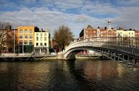
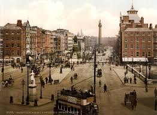
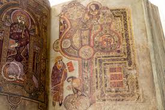

{% trans "Dublin is the capital of and largest city in Ireland. Dublin is located in the province of Leinster on the east coast of Ireland, at the mouth of the River Liffey and bordered on the South by the Wicklow Mountains. The city has an urban area population of 1,173,179. The population of the Dublin Region, as of 2016, was 1,347,359 people, and the population of the Greater Dublin area was 1,904,806. The name Dublin comes from the Irish word Dubhlinn, from dubh 'pool', referring to a dark tidal pool. This tidal pool was located where the River Poddle entered the Liffey, on the site of the castle gardens at the rear of Dublin Castle." %}
{% if LANGUAGE_CODE == 'en' %}
{% elif LANGUAGE_CODE == 'de' %}
{% endif %}
{% trans "History:" %}
{% trans "The Easter Rising of 1916, the Irish War of Independence, and the subsequent Irish Civil War resulted in a significant amount of physical destruction in central Dublin. The Government of the Irish Free State rebuilt the city centre and located the new parliament, the Oireachtas, in Leinster House. Dublin was also victim to the Northern Irish Troubles. During this 30 year conflict, violence mainly engulfed Northern Ireland. However, the Provisional IRA drew some support from within the Republic, including from Dublin." %}

{% trans "A Loyalist paramilitary group, the Ulster Volunteer Force, bombed the city during this time notably in an atrocity known as the Dublin and Monaghan bombings in which 34 people died, mainly in Dublin itself. Since 1997, the landscape of Dublin has changed. The city was at the forefront of Irelands economic expansion during the Celtic Tiger period, with private sector and state development of housing, transport and business. Following an economic decline during the Great Recession, Dublin has rebounded and as of 2017 has close to full employment." %}
{% trans "Climate:" %}
{% trans "Similar to much of the rest of northwestern Europe, Dublin experiences a maritime climate with cool summers, mild winters, and a lack of temperature extremes. The average maximum January temperature is 8.8 C, while the average maximum July temperature is 20.2 C. On average, the sunniest months are May and June, while the wettest month is October. Rainfall is evenly distributed throughout the year. Dublins sheltered location on the east coast makes it the driest place in Ireland, receiving only about half the rainfall of the west coast." %}
{% trans "Landmarks:" %}
{% trans "Dublin has many landmarks and monuments dating back hundreds of years. One of the oldest is Dublin Castle, which was first founded as a major defensive work on the orders of Englands King John in 1204, shortly after the Norman invasion of Ireland in 1169, when it was commanded that a castle be built with strong walls and good ditches for the defence of the city, the administration of justice, and the protection of the Kings treasure. One of Dublins newest monuments is the Spire of Dublin, or officially titled 'Monument of Light'. It is a 121.2-metre (398 ft) conical spire made of stainless steel and is located on OConnell Street. It replaces Nelsons Pillar and is intended to mark Dublins place in the 21st century. The base of the monument is lit and the top is illuminated to provide a beacon in the night sky across the city. The Book of Kells, located in the library of Trinity College, Dublin, is one of the citys most visited sites." %}

{% trans "The Book of Kells is an illustrated manuscript created by Irish monks circa 800 AD. The Ha penny Bridge, an iron footbridge over the River Liffey, is one of the most photographed sights in Dublin and is considered to be one of Dublins most iconic landmarks." %}